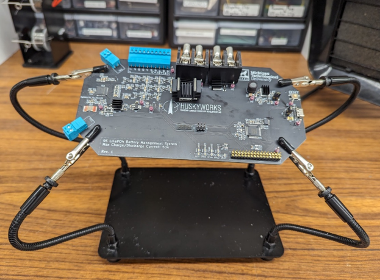
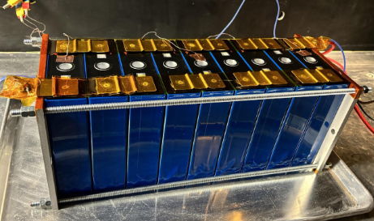

First functional version of BMS development board

Populated prototype PCB for small-scale LiFePO4 testbed
Solar Powered Weather Station
Self-sufficient power generation has fascinated me for many years, yet I have always lacked the knowledge to design a system of my own. I have a goal to one day design and build my own wind turbine to provide for my off-grid home. Houghton, Michigan has plenty of wind to spare!
Unfortunately, my present position as a broke college student makes the dream of off-grid home ownership slightly out of reach for now, unless my landlord allows me to cut the power lines on my rental! Turning to the next best thing, I designed a solar-powered weather station equipped with my newly devloped lithium ion battery management system.
There are plenty of premade weather station components available for purchase that likely would've been more affordable than a DIY job, but where's the fun in that?
I started by designing an anemometer for windspeed measurement. It utilizes a Hall effect sensor to measure angular velocity, which can be converted to windspeed with some simple math. The cheap Hall effect sensor I purchased initially presented serious debounce issues, which I was able to fix with a small capacitor across its terminals. Inside the base of the spinner is an ESP32-based microcontroller that broadcasts its data over wifi to a Raspberry Pi sitting on my desk using the MQTT protocol.
The final design of the anemometer calls for under $10 in components thanks to 3D printing and some trickery with fixing up cheap components. Measurements are most accurate in high windspeeds, as the mass of the spinner easily shrugs off light breezes.

Our 6,566 kWhr Lithium Iron Phosphate (LFP) Battery
First functional version of BMS development board

Populated prototype PCB for small-scale LiFePO4 testbed
My favorite part of this project, however, is the power supply. It is a modularly expandable solar-powered battery pack with 2800mAh capacity per module. This supply is more than enough to provide for the weather station and some LEDs placed around the box. Inside this supply box is another ESP32 microcontroller that wirelessly transmits a constant stream of telemetry to my Raspberry Pi.
I dedicated an excessive amount of effort into weatherproofing the internals. The box was printed with high-quality ASA filament, which is extraordinarily resistant to UV rays, heat, and water. All wire passthroughs are water proof and drainage plugs on the bottom of the box prevent standing water. I intend to use this solar-powered battery bank for a range of other outdoor projects, so ease of assembly was also high on my engineering priority list. As of June 19th 2024, the weather station has been operating without interruption or maintenance for 3 months.
Telemetry data over a one-hour test period
Demonstration of high discharge current cutoff circuit